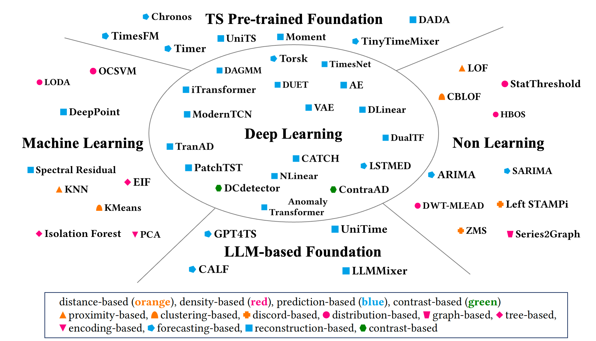

OpenTS-Bench Algorithms
Table of Contents
Specific models introduction
TFB evaluated a diverse range of methods, including statistical learning, machine learning, and deep learning methods.
Statistical Learning (SL): ARIMA, ETS, Kalman Filter (Kalman), and VAR
Machine Learning(ML): XGB Model (XGB) , Linear Regression (LR), and Random Forest (RF)
Deep Learning (DL):
- RNN-based models (RNN)
- CNN-based models (MICN, TimesNet, and TCN)
- MLP-based models (NLinear, DLinear, TiDE, N-HiTS, and N-BEATS)
- Transformer-based models (PatchTST, Crossformer, and FEDformer, Non-stationary Transformer (Stationary), Informer, and Triformer)
- Model-Agnostic models (FiLM)
Foundation models introduction
FoundTS envaluated a diverse range of time series foundation models,including time series pre-trained models pretrained with multi-domain time series and LLM-based models pretrained with large-scale text, along with specific models.
Time Series Pre-trained Models (TS Pre-trained Models):
- Reconstruction methods: MOIRAI, UniTS, Moment
- Autoregressive methods: TimesFM, Timer
- Direct prediction methods: TTM
- Hybrid pre-training methods: ROSE
LLM-based Models:
- Parameter-efficient fine-tuning methods: GPT4TS, SS2IPLLM
- Prompting methods: UniTime, Time-LLM

Anomaly detection models introduction
TAB evaluated a large number of methods, which can be classified into non-learning (NL), machine learning (ML), deep learning (DL), LLM-based, and Time-series pre-trained (TS pre-trained) methods.
